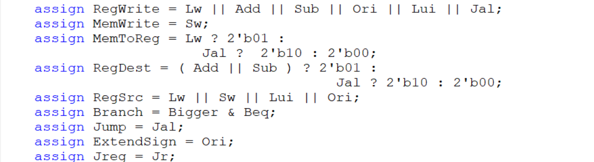

单周期CPU设计文档（Verilog）
CPU设计方案综述
（一）总体设计综述
1.IFU
（1）端口说明
| 序号 | 信号名 | 方向 | 描述 |
| :——: | :——: | :——: | :——: |
| 1 | NPC[31:0] | I | 下一个PC值 |
| 2 | CLK | I | 时钟信号 |
| 3 | RESET | I | 复位信号 |
| 4 | PC[31:0] | O | 当前PC值 |
| 5 | Instr[31:0] | O | 当前指令 |
（2）功能定义
| 序号 | 功能 | 描述 |
| :——: | :——: | :——: |
| 1 | 取指令 | 取出当前PC所对应的指令 |
| 2 | 更改PC值 | 利用NPC更改PC值 |
2.GRF
（1）端口说明
| 序号 | 信号名 | 方向 | 描述 |
| :——: | :——: | :——: | :——: |
| 1 | A1[4:0] | I | 5位地址输入信号，指定32个寄存器中的一个，将其中存储的数据读出到RD1 |
| 2 | A2[4:0] | I | 5位地址输入信号，指定32个寄存器中的一个，将其中存储的数据读出到RD2 |
| 3 | A3[4:0] | I | 5位地址输入信号，指定32个寄存器中的一个，将其作为RD的写入地址 |
| 4 | WD[31:0] | I | 32位写入数据 |
| 5 | PC[31:0] | I | 当前PC值 |
| 6 | RD1[31:0] | O | A1指定寄存器的32位数据 |
| 7 | RD2[31:0] | O | A2指定寄存器的32位数据 |
| 8 | CLK | I | 时钟信号 |
| 9 | WE | I | 写使能信号 |
| 10 | RESET | I | 同步复位信号，清零32个寄存器中的数据 |
(2)功能定义
| 序号 | 功能 | 描述 |
| :——: | :——: | :——: |
| 1 | 同步复位 | 时钟上升沿到来时，若RESET信号有效，则将32个寄存器中的数据全部清除 |
| 2 | 读出数据 | 将A1与A2所存地址对应的寄存器的数据读出到RD1和RD2|
| 3 | 写入数据 | 当WE有效且时钟上升沿到来时，将WD写入到A3所存地址对应的寄存器中|
3.NPC
（1）端口说明
| 序号 | 信号名 | 方向 | 描述 |
| :——: | :——: | :——: | :——: |
|1|NPCControl|I|分支信号|
|2|Jump|I|跳转信号|
|3|Jreg|I|Jr 信号|
|4|PC[31:0]|I|当前PC值|
|5|J26imm[25:0]|I|跳转信号的26位立即数|
|6|B32imm[31:0]|I|分支信号的扩展后的32位立即数|
|7|RegJump[31:0]|I|Jr跳转地址|
|8|NPC[31:0]|O|下一个PC值|
|9|PC4[31:0]|O|PC+4的值|
(2)功能定义
| 序号 | 功能 | 描述 |
| :——: | :——: | :——: |
|1|计算下一PC的值|根据指令和当前PC值计算下一PC值|
|2|输出PC4|为JR写入寄存器提供数据|
4.EXT
（1）端口说明
| 序号 | 信号名 | 方向 | 描述 |
| :——: | :——: | :——: | :——: |
|1|i16[15:0]|I|16位立即数
|2|i32[31:0]|O|经过扩展后的32位立即数
|3|ExtendSign|I|选择扩展类型信号 0：符号扩展 1：无符号扩展|
(2)功能定义
| 序号 | 功能 | 描述 |
| :——: | :——: | :——: |
|1|符号扩展|将16位立即数符号扩展为32位立即数|
|2|无符号扩展|将16位立即数无符号扩展为32位立即数|
5.DM
（1）端口说明
| 序号 | 信号名 | 方向 | 描述 |
| :——: | :——: | :——: | :——: |
|1|A[31:0]|I|32位地址输入|
|2|RD[31:0]|O|32位数据输出|
|3|WD[31:0]|I|32位数据输入|
|4|PC[31:0]|I|当前PC值|
|5|RESET|I|同步复位信号|
|6|CLK|I|时钟信号|
|7|WE|I|写使能信号|
(2)功能定义
| 序号 | 功能 | 描述 |
| :——: | :——: | :——: |
|1|写入数据|当WE有效且时钟上升沿到来时，将WD中的数据写入到A所存地址所对应的位置|
|2|读出数据|将A所存地址对应位置的数据读出到RD|
6.Control
（1）端口说明
| 序号 | 信号名 | 方向 | 描述 |
| :——: | :——: | :——: | :——: |
|1|Instr[31:0]|I|当前指令|
|2|Bigger|I|ALU两个操作数是否相等信号|
|3|ExtendSign|O|扩展类型信号|
|4|Jump|O|跳转信号|
|5|RegWrite|O|寄存器写使能信号|
|6|MemWrite|O|DM写使能信号|
|7|MemToReg|O|Reg写入数据类型信号|
|8|RegDest|O|A3寄存器选择信号|
|9|ALUop|O|ALU功能选择信号|
|10|Branch|O|分支信号|
|11|Jreg|O|Jr信号|
(2)真值表
| 端口 | add | sub | ori | lw|sw|lui|beq|Jal|Jr|
| :——: | :——: | :——: |:——: |:——: |:——: |:——: |:——: |:——: |:——: |
|OP|000000|000000|001101|100011|101011|001111|000100|000011|000000|
|FC|100000|100010|x|x|x|x|x|x|001000|
|ALUop|0000|0001|0011|0000|0000|0100|0000|0000|0000|
|Jump|0|0|0|0|0|0|0|1|0|
|RegWrite|1|1|1|1|0|1|0|1|0|
|MemWrite|0|0|0|0|1|0|0|0|0|
|MemToReg|00|00|00|01|00|00|00|10|00|
|RegDest|01|01|00|00|00|00|00|10|00|
|RegSrc|0|0|1|1|1|1|0|0|0|
|Branch|0|0|0|0|0|0|1|0|0|
|Jreg|0|0|0|0|0|0|0|0|1|
7.ALU
（1）端口说明
| 序号 | 信号名 | 方向 | 描述 |
| :——: | :——: | :——: | :——: |
|1|SrcA[31:0]|I|操作数1|
|2|SrcB[31:0]|I|操作数2|
|3|ALUControl[3:0]|I|ALU功能选择信号
|4|Bigger|O|两操作数是否相等信号|
|5|Res[31:0]|O|运算结果|
(2)功能定义
| 序号 | 功能 | 描述 |
| :——: | :——: | :——: |
|1|判断两个操作数是否相等|相等则Bigger输出1否则为0|
|2|加运算|res=SrcA+SrcB|
|3|减运算|res=SrcA-SrcB|
|4|与运算|res=SrcA$SrcB|
|5|或运算|res=SrcB|SrcB|
|6|加载高位运算|res={SrcB[15:0],16’h0}|
8.MUX
1.Mux_4_5
（1）端口说明
| 序号 | 信号名 | 方向 | 描述 |
| :——: | :——: | :——: | :——: |
|1|data0[4:0]|I|数据0|
|2|data1[4:0]|I|数据1|
|3|data2[4:0]|I|数据2|
|4|data3[4:0]|I|数据3|
|5|sel[1:0]|I|选择信号|
|6|out[4:0]|O|输出|
2.Mux_4_32
（1）端口说明
| 序号 | 信号名 | 方向 | 描述 |
| :——: | :——: | :——: | :——: |
|1|data0[31:0]|I|数据0|
|2|data1[31:0]|I|数据1|
|3|data2[31:0]|I|数据2|
|4|data3[31:0]|I|数据3|
|5|sel[1:0]|I|选择信号|
|6|out[31:0]|O|输出|
3.Mux_2_32
| 序号 | 信号名 | 方向 | 描述 |
|---|---|---|---|
| 1 | data0[31:0] | I | 数据0 |
| 2 | data1[31:0] | I | 数据1 |
| 5 | sel | I | 选择信号 |
| 6 | out[31:0] | O | 输出 |
(2)功能定义
| 序号 | 功能 | 描述 |
| :——: | :——: | :——: |
|1|选择数据|根据选择信号进行选择数据并输出
测试方案
(1)测试代码
ori $a0,$0,1999
ori $a1,$a0,111
lui $a2,12345
lui $a3,0xffff
nop
ori $a3,$a3,0xffff
add $s0,$a0,$a1
add $s1,$a3,$a3
add $s2,$a3,$s0
beq $s2,$s3,eee
sub $s0,$a0,$s2
sub $s1,$a3,$a3
eee:
sub $s2,$a3,$a0
sub $s3,$s2,$s1
ori $t0,$0,0x0000
sw $a0,0($t0)
nop
sw $a1,4($t0)
sw $s0,8($t0)
sw $s1,12($t0)
sw $s2,16($t0)
sw $s5,20($t0)
lw $t1,20($t0)
lw $t7,0($t0)
lw $t6,20($t0)
sw $t6,24($t0)
lw $t5,12($t0)
jal end
ori $t0,$t0,1
ori $t1,$t1,1
ori $t2,$t2,2
beq $t0,$t2,eee
lui $t3,1111
jal out
end:
add $t0,$t0,$t7
jr $ra
out:
add $t0,$t0,$t3
ori $t2,$t0,0
beq $t0,$t2,qqq
lui $v0,10
qqq:
lui $v0,11
（2)MARS中运行结果
(3)该CPU运行输出结果
@00003000: $ 4 <= 000007cf
@00003004: $ 5 <= 000007ef
@00003008: $ 6 <= 30390000
@0000300c: $ 7 <= ffff0000
@00003014: $ 7 <= ffffffff
@00003018: $16 <= 00000fbe
@0000301c: $17 <= fffffffe
@00003020: $18 <= 00000fbd
@00003028: $16 <= fffff812
@0000302c: $17 <= 00000000
@00003030: $18 <= fffff830
@00003034: $19 <= fffff830
@00003038: $ 8 <= 00000000
@0000303c: *00000000 <= 000007cf
@00003044: *00000004 <= 000007ef
@00003048: *00000008 <= fffff812
@0000304c: *0000000c <= 00000000
@00003050: *00000010 <= fffff830
@00003054: *00000014 <= 00000000
@00003058: $ 9 <= 00000000
@0000305c: $15 <= 000007cf
@00003060: $14 <= 00000000
@00003064: *00000018 <= 00000000
@00003068: $13 <= 00000000
@0000306c: $31 <= 00003070
@00003088: $ 8 <= 000007cf
@00003070: $ 8 <= 000007cf
@00003074: $ 9 <= 00000001
@00003078: $10 <= 00000002
@00003080: $11 <= 04570000
@00003084: $31 <= 00003088
@00003090: $ 8 <= 045707cf
@00003094: $10 <= 045707cf
@000030a0: $ 2 <= 000b0000
思考题
（1）阅读下面给出的 DM 的输入示例中（示例 DM 容量为 4KB，即 32bit × 1024字），根据你的理解回答，这个 addr 信号又是从哪里来的？地址信号 addr 位数为什么是 [11:2] 而不是 [9:0] ？

答：addr是从ALU的输出信号中经过位的截取而得到的，代表的是将要读取的DM的储存器的位置。
因为MIPS以字为单位，存储的时候也是以字为单位存储的（32位reg）,左移两位相当于除4，除4才可以得到我们需要的字，即我们需要的数据。
（2）思考上述两种控制器设计的译码方式，给出代码示例，并尝试对比各方式的优劣。
答：

控制信号对应指令：哪种信号需要为哪些指令提供什么样的值一目了然
指令对于控制信号：哪种指令需要什么指令取什么值一目了然
这是两种看待控制信号和指令之间关系的角度。
前者代码较为简洁，后者代码则较为繁多。
前者不能很好的体现一条条指令的独立性，后者则可以很好体现一条条指令的独立性。
（3）在相应的部件中，复位信号的设计都是同步复位，这与 P3 中的设计要求不同。请对比同步复位与异步复位这两种方式的 reset 信号与 clk 信号优先级的关系。
答：我们可以通过Verilog中实现它们的方式进行对比：
前者为异步复位，后者为同步复位。
- 可以看出来异步复位中clk和reset都为敏感信号，两者中任意一者发生变化都会导致always块的运行，clk和reset无相关关系，所以优先级相同。
- 同步复位中只有clk为敏感信号，只有满足clk上升沿时，always块才会运行，这时才会考虑reset的值是否有效，所以clk和reset存在类似于主从关系的关系，优先级clk>reset。
（4）C 语言是一种弱类型程序设计语言。C 语言中不对计算结果溢出进行处理，这意味着 C 语言要求程序员必须很清楚计算结果是否会导致溢出。因此，如果仅仅支持 C 语言，MIPS 指令的所有计算指令均可以忽略溢出。 请说明为什么在忽略溢出的前提下，addi 与 addiu 是等价的，add 与 addu 是等价的。提示：阅读《MIPS32® Architecture For Programmers Volume II: The MIPS32® Instruction Set》中相关指令的 Operation 部分。
答：addi与addiu行为区别上的差异在于：出现溢出时，addiu忽略溢出，将溢出位舍弃，addi则会抛出错误SignalException(IntegerOverflow)，其余表现形式与addiu相同，故忽略溢出，则错误不抛出，此时两者便等价了。
add与addu上述相同。